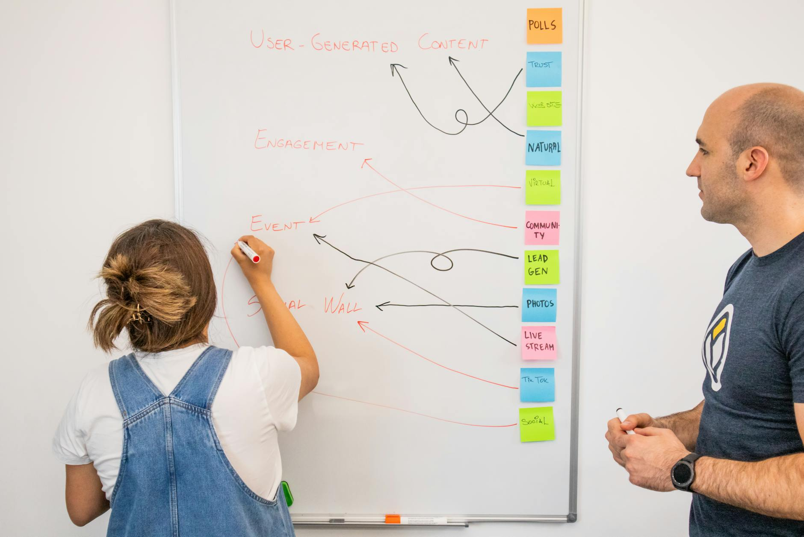
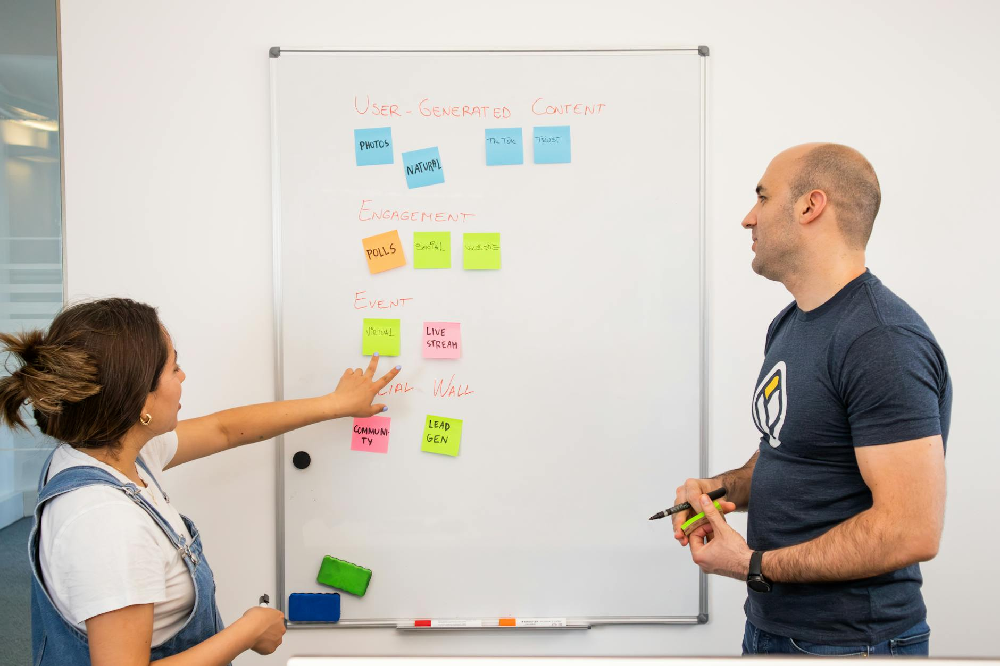

TL;DR
To market your first e-book effectively, identify your target audience before launching, and budget at least $200 for marketing efforts. Use structured steps like pre-launch engagement and post-launch feedback to maximize sales.
Who Should Be Marketing Their First E-Book?
If you’re a first-time author struggling to reach potential readers and generate e-book sales, you’re not alone. Many new writers underestimate the importance of marketing their e-books. They often believe that simply uploading their work to platforms like Amazon Kindle or Apple Books will lead to sales. However, without a strategic marketing plan, your work may go unnoticed in a sea of content.
Why Traditional E-Book Marketing Fails

Many authors mistakenly assume that generic marketing strategies will work for their specific book. This often involves using a blanket approach for social media promotion, failing to tailor their message to a defined audience.
For example, focusing on hashtags like #books or #read instead of niche keywords relevant to their genre can dilute their reach. Moreover, authors often underestimate how much time and effort it takes to market effectively.
They neglect crucial steps like identifying their target audience through market research, which can lead to wasted resources and little return on investment.
Your Core Workflow: Steps for Launching and Marketing

To effectively market your e-book, you need a structured plan that spans several weeks before your launch and beyond. Here’s a straightforward workflow:
- Pre-Launch (1-2 months): Start building your audience through social media engagement and email sign-ups.
Create awareness and anticipation for your e-book.
- Launch Week: Optimize your e-book listing with an appealing cover and description. Consider using paid promotions on platforms like Facebook or Amazon.
- Post-Launch (Up to 3 months): Continue engaging with your audience, leverage reader reviews, and refine your marketing approach based on feedback.
A Real Example: How One Author Increased Sales in 30 Days
Consider the case of Sarah, a new author who launched her first e-book on personal finance. In her first week, Sarah sold only 10 copies, feeling disheartened as she watched her ambitious project receive little traction. Realizing she needed a more tactical approach, she revamped her marketing strategy to target her ideal readers more effectively—young professionals looking to improve their financial literacy.
Sarah implemented a multi-faceted content marketing strategy over the next 30 days. She started by writing informative blog posts, sharing insights from her e-book, and optimizing them for SEO to attract organic traffic.
For example, she crafted an article titled “5 Budgeting Tips for Young Professionals,” which not only positioned her as an expert but also included a call-to-action to purchase her e-book.
This post alone garnered over 1,500 views within the month.
Next, she leveraged social media platforms like Instagram and LinkedIn, where her target audience was most active. She posted daily tips, infographics, and snippets from her e-book, engaging with followers through polls and Q&A sessions. Using targeted ads on these platforms, she spent around $200 and reached an additional 5,000 potential customers.
Sarah also tapped into the power of email marketing by setting up a mailing list using a lead magnet—a free budgeting template. In the first month, she attracted 300 subscribers. She sent out weekly newsletters highlighting her blog content and included a limited-time discount offer for her e-book. As a consequence of this strategy, her open rates averaged around 30%, well above the industry standard.
Additionally, Sarah partnered with three finance bloggers who reviewed her e-book in exchange for a free copy. Their audiences totaled 50,000 followers, giving her a substantial boost in visibility. Each blogger posted their reviews on their platforms, leading to her e-book featured on their “top recommendations” lists, which led to a spike in sales.
By the end of the month, she saw her sales skyrocket to 300 copies, generating a remarkable increase in passive income. This transformation not only improved her financial situation but also built a solid foundation for her brand, demonstrating the profound impact of a targeted and well-executed marketing strategy.
Mistakes and Tradeoffs: What to Avoid
New authors often make critical mistakes that jeopardize e-book success. One common error is neglecting cover design; studies show that 90% of consumers make subconscious judgments about books based on their covers.
For instance, an author might design a cover using a free platform like Canva, thinking DIY will save costs. However, investing in a professional designer could cost between $300 and $2,000 but can lead to a 40% increase in sales—potentially earning back that investment in just a few months.
Another frequent misstep is the lack of engagement on social media. Many authors mistakenly believe that if their book is compelling enough, it will naturally draw an audience. Yet, research indicates that authors engaging with their followers can see a 50% higher interaction rate.
For instance, if an author has 500 followers and posts consistently engaging content about their book, their pre-launch buzz could easily translate into 100 sales on launch day. In contrast, an author who opts to save time by ignoring social media may end up with fewer than 20 sales, wasting both their marketing budget and effort.
A notable case is the journey of a debut novelist who focused solely on writing, underestimating social media’s role. After publishing her e-book, she garnered only modest sales, totaling around 150 in the first month.
Realizing her oversight, she decided to engage actively on Instagram, sharing behind-the-scenes writing insights and giveaways. With this consistent effort, not only did her sales for the following month double, but her follower count also swelled from 600 to 1,800, allowing her future works to gain traction much faster.
The tradeoff between spending hours promoting online vs.
Your Next Steps: Using Feedback for Long-Term Success
After your e-book launch, don't forget to leverage reader feedback for iterative improvements. Regularly check reviews and reader comments; this insight can guide your next marketing strategy.
If readers rave about your writing style but mention lack of depth in a particular area, consider revising future editions or adjusting your promotional outreach. Create a schedule to review your sales data and customer feedback regularly—ideally weekly for the first month, then monthly thereafter.
This approach helps you refine your strategy, keeping you attuned to your audience's needs and preferences.
FAQ
How much should I budget for e-book marketing?
Begin with a budget of at least $200 for initial marketing efforts, including ads and promotional materials.
What are the best platforms to sell my e-book?
Consider using Amazon Kindle, Apple Books, and Google Play Books for their wide reach and established user bases.
This article has been reviewed for practical usefulness and will be updated regularly when information changes.
Next step
Use the article as a decision point, not just reading material. Your next system matters more than more browsing.
Search more articles
Find related tools, workflows, and guides.
Photo credits
- Photo 1: Pavel Danilyuk via Pexels
- Photo 2: Walls.io via Pexels
- Photo 3: Walls.io via Pexels
- Photo 4: Monstera Production via Pexels
- Photo 5: Malte Luk via Pexels